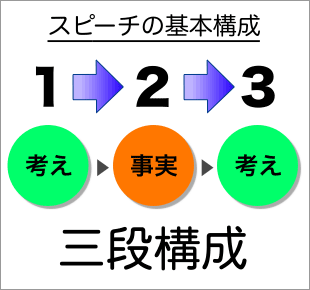
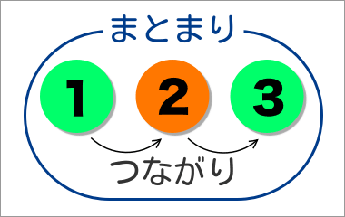

スピーチの構成の基本
ショートスピーチ（１～３分程度のスピーチ）では３段構成を基本と考えるのがよいだろう。
〈自分のことについて語るスピーチ〉でも、〈意見を表明するスピーチ〉でも、《考え→事実→考え》の３段構成で考えればよい。

ショートスピーチで《考え→事実→考え》の３段構成を薦める理由は以下の通りである。
- 最初に考えを述べることで、聞き手も安心して聞くことができる
- 最初に考えを言っているので、途中がうまく話せなくても大意が伝わる
- 最初に考えを言っているので、いつでもスピーチを終わることができる
３段構成とは
３段構成の基本は次のようになる。
- 《考え》
→ テーマについての意見や答えを簡潔に述べる
- 〈事実（経験・体験）〉
→ <１>で述べた《考え》の根拠・理由・具体例を述べる
- 《考え》
→ <１>で述べた《考え》をもう少し詳しく述べてまとめる
スピーチの〈まとまり〉と〈つながり〉
スピーチには〈始まり〉と〈終わり〉がある。また、スピーチには〈始まり〉から〈終わり〉に向けた《流れ》がある。
スピーチに〈始まり〉と〈終わり〉があるということは、スピーチが〈始まり〉と〈終わり〉によって区切られたひとつの全体であることを意味している。

一方、スピーチには〈始まり〉から〈終わり〉に向けた《流れ》があるということは、スピーチが「部分」の寄せ集めではないことを意味している。スピーチのそれぞれの部分には、互いに密接な関連があり、より前にある部分からより後ろにある部分へと時間的に展開していくものなのである。
| まとまり | 結束性 | 構成 | 全体／マクロ |
| つながり | 関連性
関係性 | 展開 | 部分／ミクロ |
スピーチをする際には、スピーチのまとまりとスピーチのつながりに気をつけながら話をしなければならない。
スピーチのまとまりを高める方法
スピーチのまとまりを高めるには、スピーチの構成をはっきりしたものにしなければならない。
複数のトピックを語るとき
スピーチの中でいくつかの話題（トピック）や出来事（エピソード）を語るときには、先に数字を提示する方法が有効である。
- 「言いたいことが３つあります。」
- 「２つのことをお話ししたいと思います。」
- 「理由は２つあります。」
スピーチを終えるとき
スピーチを終えるときには、終わりであるとはっきりわかるようにするのがよい。終わりを明示することで、スピーチを完結（完成）したものにすることができるからである。
- 「以上でスピーチを終わります。」
- 「私のスピーチは以上です。」
- 「以上です。ありがとうございました。」
- 「終わります。ありがとうございました。」
もしも途中で時間がなくなってしまったり、内容のまとまりが乏しくても、終わりをはっきり告げれば、完結した（＝まとまりのある）スピーチになるのである。